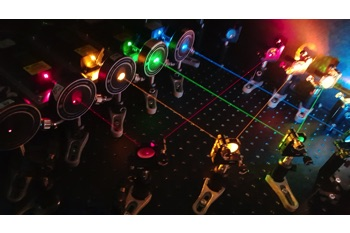
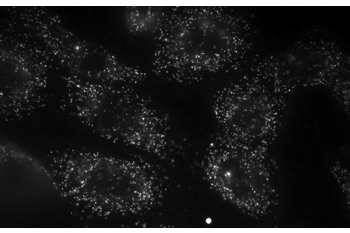
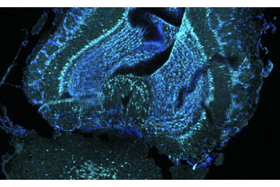
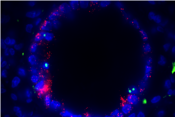

We are interested to develop and apply multiplexed and high-resolution optical microscopy tools for systems biology.
Traditional methods that profile RNAs, like high throughput sequencing, fail to capture spatial information.
While in the Zhuang Group at Harvard University, Kok Hao co-developed Multiplexed Error-Robust Fluorescence In Situ Hybridization (MERFISH), a method that can spatially image hundreds of RNA species within a tissue and even at the sub-cellular level.

How are mammalian tissues organized?
How do different cells work together?
Where are all the RNAs localized?
Does their location matter?
Interested? Join us!
Funding Sources: A*STAR, NMRC, AXA research fund